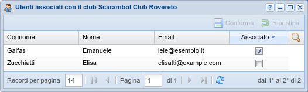

Gestione associazione utenti di un club¶
In SoL, un utente può creare nuovi campionati, valutazioni e tornei legati ai club di
cui è responsabile (che di solito sono quelli che ha creato lui stesso). In alcuni casi, in
particolare per le federazioni, può essere desiderabile permettere di farlo anche ad altri
utenti.
Premendo il tasto destro del mouse nella tabella di gestione dei club, il responsabile (o l'amministratore) troveranno l'azione Utenti che apre questo pannello:

Gestione utenti di un club¶
Sono elencati tutti gli utenti confermati, con un checkbox a fianco di ognuno che dice se l'utente è attualmente associato al club o meno: come detto, solo quelli marcati potranno creare, ad esempio, un nuovo torneo collegato al club.